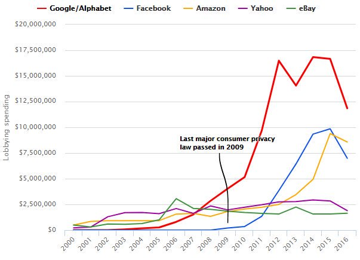

While many news outlets have covered what Zuckerberg wore for his testimony before congress last week, I wish that several more substantial issues were getting greater coverage, such as the lackluster response of Facebook to its role in the genocide in Myanmar, what concrete regulations could help us, the continued push of Facebook lobbyists to gut the few privacy laws we have, and the role that Free Basics (aka Internet.org– remember that?) has played in global hate speech and violence. So let’s discuss them now.
Genocide in Myanmar vs. a Monetary Fine in Germany
The impact of Facebook is much larger than just the USA and UK: there is a genocide happening in Myanmar, with hundreds of thousands of people from an ethnic minority being systematically driven from their homes, raped, and/or killed, and with entire villages being burnt and bulldozed to the ground. Facebook is the primary source of news in Myanmar (in part due to the Facebook program “Free Basics”, explained more below), and it has been used for years to spread dehumanizing propaganda about the ethnic minority (as well as to censor news reports about violence against the minority). Local activists have been asking Facebook to address this issue since 2013 and news outlets have been covering Facebook’s role in the genocide since 2014, yet Facebook has been beyond sluggish to respond. (I previously wrote about Facebook’s role in Myanmar here.)
Even now, Zuckerberg promised during the congressional hearings to hire “dozens” to address the genocide in Myanmar (in 2018, years after the genocide had begun), which stands in stark contrast to Facebook quickly hiring 1,200 people in Germany to try to avoid expensive penalties under a new German law against hate speech. Clearly, Facebook is more reactive to the threat of a financial penalty than to the systematic destruction of an ethnic minority.
Can AI solve hate speech?
Facebook’s actions in Germany of hiring 1,200 human content moderators also stand in contrast to Zuckerberg’s vague assurance that Facebook will use AI to address hate speech. It’s valuable to look at how Facebook actually behaves when facing a potential financial penalty, and not what sort of vague promises are made to Congress. As Cornell Law Tech professor James Grimmelmann said, “[AI] won’t solve Facebook’s problems, but it will solve Zuckerberg’s: getting someone else to take responsibility.”
As two concrete examples of just how far the tech giants are from effectively using AI on these problems, let’s consider Google. In 2017, Google released a tool called Perspective to automatically detect online harassment and abusive speech, with high-profile launch partners including The New York Times, The Economist, and Wikipedia. Librarian Jessamyn West found a number of sexist, racist, and ableist biases (confirmed and covered in more detail here). For instance, the statement I am a gay Black woman got an 87 percent toxicity score (out of 100), while I am a man was one of the least toxic phrases tested (just 20 percent). Also in 2017, Google boasted that they’d implemented cutting-edge machine learning to identify and remove YouTube videos promoting violent extremism or terrorism. The removed videos included those of activist groups documenting Syrian war crimes, evidence from the Chelsea Manning court case, and documentation of the destruction of ancient artifacts by Islamic State (many of these videos were later put back and Google conceded it had made mistakes). These examples demonstrate a few key points:
- Using AI to address harassment and abusive speech is incredibly hard.
- You can’t just throw AI at a problem without deeply understanding the problem.
- Although Facebook is in the spotlight right now, Google has the same business model (targeted ads) and same monopoly status, and Google is causing huge societal harms as well. For instance, YouTube has been well-documented to recommend white supremacist videos and conspiracy theories from a wide-range of starting points, and it is playing a role in radicalizing users into dangerous viewpoints.
You can’t just throw AI at a problem
Expertise in history, sociology, and psychology is necessary. As I said in my talk at the MIT Tech Review Conference, domain expertise is incredibly important. You can’t just have techies throwing AI at a problem without really understanding it, or the domain. For instance, radiologists who have also become deep learning practitioners have been able to catch some errors in deep learning work on radiology that deep learning experts missed. To this end, I think it is crucial that Facebook work with sociologists, historians, psychologists, and experts on topics like authoritarian governments, propaganda, etc. to better understand the problems they’ve created and plausible solutions.
Data privacy is a public good
Hopefully the above examples have made clear that data privacy is not just an individual choice, but it has profound societal impacts. As UNC Professor and techno-sociology expert Zeynep Tufekci wrote, Data privacy is not like a consumer good, where you click ‘I accept’ and all is well. Data privacy is more like air quality or safe drinking water, a public good that cannot be effectively regulated by trusting in the wisdom of millions of individual choices. A more collective response is needed.
Tufekci highlights some policies she recommends (and I agree): 1. Data collection should only be through a clear, concise, & transparent opt-in process. 2. People should have access to all data collected on them. 3. Data collection should be limited to specifically enumerated purposes, for a designated period of time. 4. Aggregate use of data should be regulated.
Another area of potential regulation is to address the monopoly status of tech giants like Facebook and force interoperability. Professor Jonathan Zittrain of Harvard has suggested, The key is to have the companies actually be the ‘platforms’ they claim they are. Facebook should allow anyone to write an algorithm to populate someone’s feed.
Professor Tufekci also proposed, If anything, we should all be thinking of ways to reintroduce competition into the digital economy. Imagine, for example, requiring that any personal data you consent to share be offered back to you in an “interoperable” format, so that you could choose to work with companies you thought would provide you better service, rather than being locked in to working with one of only a few.
The power of tech lobbies
While regulation is necessary for items we consider public goods, in the USA we face a significant obstacle due to the amount the tech industry spends on lobbying and the outsize impact that corporate lobbies have on our policies. As Alvaro Bedoya, Executive Director at the Georgetown Law Center on Privacy and Technology and a former senate staffer who worked on privacy laws points out, the last major consumer privacy law was passed in 2009, before Google, Facebook, and Amazon had really ramped up their lobbying spending. I’m sitting here watching Mark Zuckerberg say he’s sorry and that Facebook will do better on privacy, yet literally as he testifies lobbyists paid by Facebook in Illinois and California are working to stop or gut privacy laws, said Bedoya.

The Illinois Biometric Information Privacy Act is one of the strongest privacy laws in the US, requiring a person’s explicit consent before a company can make a biometric scan of their body. At the same time that Zuckerburg was telling Congress how people’s facial images should be protected data, Facebook lobbyists have been working to gut this Illinois law.
Based on his experience as a senate staffer working on privacy laws, Alvaro makes the valuable point that instead of passing overly broad regulations (which lobbyists can more easily render meaningless), we may have a better chance at passing specific privacy protections, such as trying to outlaw stalking apps that abusers can use to track their victims, or to regulate the currently unregulated use by police of facial recognition programs with unknown error rates and racial biases.
In the USA, we also face the issue of whether our laws will actually be enforced when tech giants are found to violate them. For instance, in 2016 Propublica discovered that Facebook allowed the placement of housing ads that would not be shown to African-American, Hispanic, or Asian-American people, which is a violation of the Fair Housing Act of 1968. “This is horrifying. This is massively illegal. This is about as blatant a violation of the federal Fair Housing Act as one can find,” said prominent civil rights lawyer John Relman. Facebook apologized (although it did not face any penalty); yet over a year later in 2017, Facebook was still found to let people place housing ads that would not be shown to certain groups of people, such as African Americans, people interested in wheelchair ramps, Jews, and Spanish speakers. Again, please contrast this with how swiftly and strongly Facebook responded in Germany to the threat of a penalty. As a further example, Facebook has been found to be violating the Age Discrimination in Employment Act of 1967 by allowing companies, including Verizon, Amazon, Goldman Sachs, Target, and Facebook itself, to place job advertisements targeted solely at young people.
Free Basics, aka Internet.org
Zooming back out to Facebook’s global impact, it is important to understand the role that Facebook’s program Free Basics has played in the genocide in Myanmar, the election of a violent strongman in the Philipines who is notorious for his use of extrajudicial killings, and elsewhere. Free Basics (formerly called Internet.org) was initially touted as a charitable effort in which Facebook provides free access to Facebook and a small number of other sites, but not to the internet as a whole, in countries including Myanmar, Somalia, the Philippines, Nigeria, Iraq, Pakistan, and others. For users in these countries, there is no charge for using the Facebook app on a smartphone, while the data rates for other apps is often prohibitively expensive. Despite it’s original name and description of benevolent aims, Internet.org was not a non-profit, but rather a business development group within Facebook aimed at increasing users and revenue.
Free Basics has led to large numbers of Facebook users who say they don’t use the internet and never follow links outside of facebook (56% of Facebook users in Indonesia and 61% in Nigeria). In some countries, people use internet and Facebook interchangeably, and Facebook is the primary way that people access news. Free Basics violates net neutrality and was banned in India in 2016 for this reason. While Facebook may have had good intentions with this program, it should have been accompanied with a huge sense of responsibility, and it needs to be re-evaluated in light of its role in inciting violence. Facebook needs to put significant resources into analyzing the impact Free Basics is having in the countries where it is offered, and to work closely with local experts from those countries.
I want to thank Omoju Miller, a machine learning engineer at Github who has her PhD from Berkeley, for recently reminding me about Free Basics and asking why more journalists aren’t writing about the role it’s played in global events.
Rethinking the Web
In French President Emmanuel Macron’s recent interview about AI said: In the US, [AI] is entirely driven by the private sector, large corporations, and some startups dealing with them. All the choices they make are private choices that deal with collective values. That’s exactly the problem you have with Facebook and Cambridge Analytica or autonomous driving… The key driver should not only be technological progress, but human progress. This is a huge issue. I do believe that Europe is a place where we are able to assert collective preferences and articulate them with universal values. Perhaps France will provide a template of laws that support technical progress while protecting human values.
To end on a note of hope, Tim Berners-Lee, inventor of the web, wrote an op-ed saying, two myths currently limit our collective imagination: the myth that advertising is the only possible business model for online companies, and the myth that it’s too late to change the way platforms operate. On both points, we need to be a little more creative. While the problems facing the web are complex and large, I think we should see them as bugs: problems with existing code and software systems that have been created by people – and can be fixed by people. Create a new set of incentives and changes in the code will follow.
It’s easy to jump to simplistic conclusions: many commenters assume that Facebook must be supported at all times on the assumption that technology providers have the power to help society (or by disregarding the role that regulation plays in maintaining healthy markets and a health society); and many assume that Facebook and all involved must be evil and everyone needs to stop using their services right away. The reality is more complex. Technology can be greatly beneficial for society, and it can also have a disastrous impact. The complex problems we are facing require creative and nuanced solutions.
I look forward to reading your responses. Create a free GitHub account to comment below.